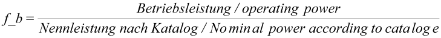

|
|
|


有效带宽度
理论带宽度（传递扭矩所需的最小宽度）可以根据制造商目录中的数据计算。然后将有效带宽度取为下一个最大的标准带宽度。
一般来说，带宽度不应大于 5*pitch。如果选择的带过宽或过窄，将显示警告消息。虽然计算仍会继续，但使用其提供的数据风险自负。
定义有效带宽度/带宽度系数：
要定义带宽度，您需要带宽度系数 (f_b)。使用此公式计算该系数：
 | (53.4) |
目录中规定的标称功率是取自制造商目录的表格值，它取决于较小带轮的转速和齿数。
然后可以使用计算出的系数 f_b 从（目录）表中定义有效带宽度。但是，如果 f_b 与标准带宽度不匹配，将使用下一个最大的宽度。
备注：
KISSsoft 计算报告中的理论带宽度对应于根据计算出的系数 f_b 得出的插值。
KISSsoft 将表格值（目录数据）存储在文件中，您可以随后编辑这些文件。使用 KISSsoft 数据库工具查找特定带型的准确文件名（例如 XL-Isoran 的 Z091-001.dat）。
Effective belt width
The theoretical belt width (minimum width required to transmit the torque) can be calculated from the data in the manufacturer catalogs. The effective belt width is then taken as the next largest standard belt width.
As a general rule, the belt width should not be larger than 5*pitch. A warning message is displayed if you select a belt that is either too wide or too narrow. Although the calculation continues, you use the data it provides at your own risk.
Defining the effective belt width/factor for the belt width:
To define the belt width, you will need the belt width factor (f_b). Use this formula to calculate this factor:
(53.4) |
The nominal power as specified in the catalog is a tabular value taken from the manufacturers' catalogs and is dependent on the speed and number of teeth on the smaller belt sheave.
With the calculated coefficient f_b you can then define the effective belt width from a (catalog) table. However, if f_b does not match a standard belt width, the next biggest width will be used.
Remarks:
The theoretical belt width in the KISSsoft calculation reports corresponds to an interpolated value, according to calculated factor f_b.
KISSsoft stores the tabular values (catalog data) in files which you can then edit. Use the KISSsoft database tool to find the exact file name for a specific belt type (e.g. Z091-001.dat for XL-Isoran).